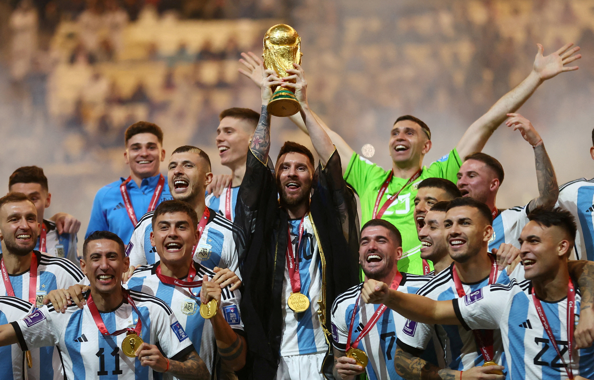
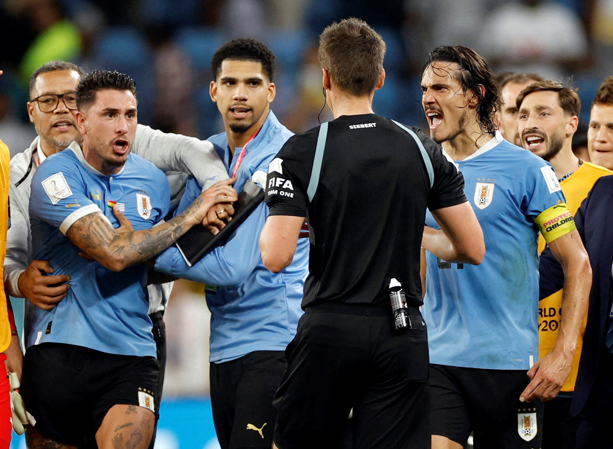
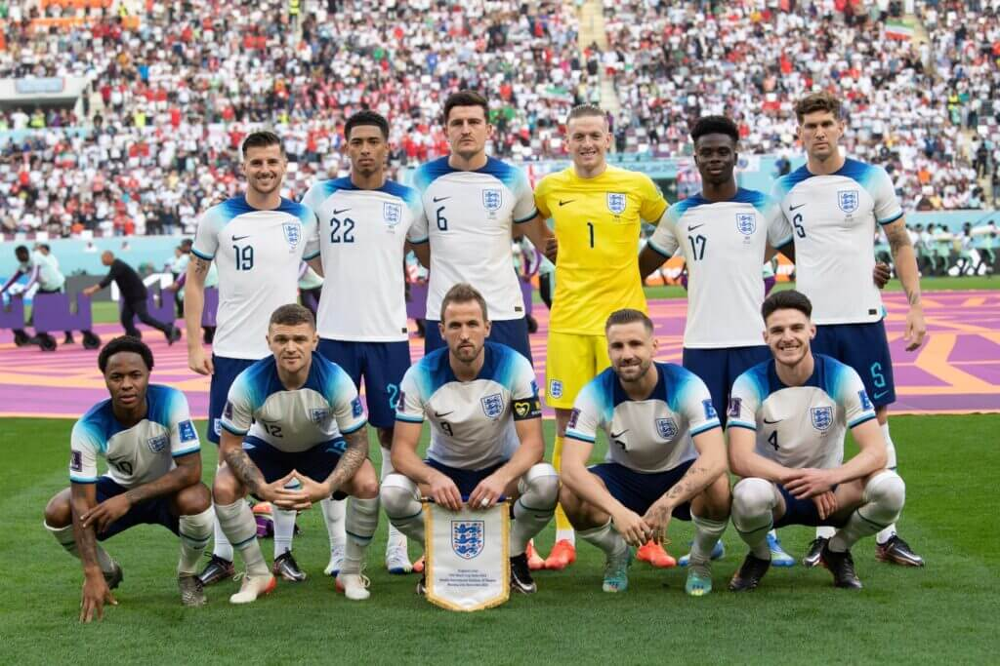
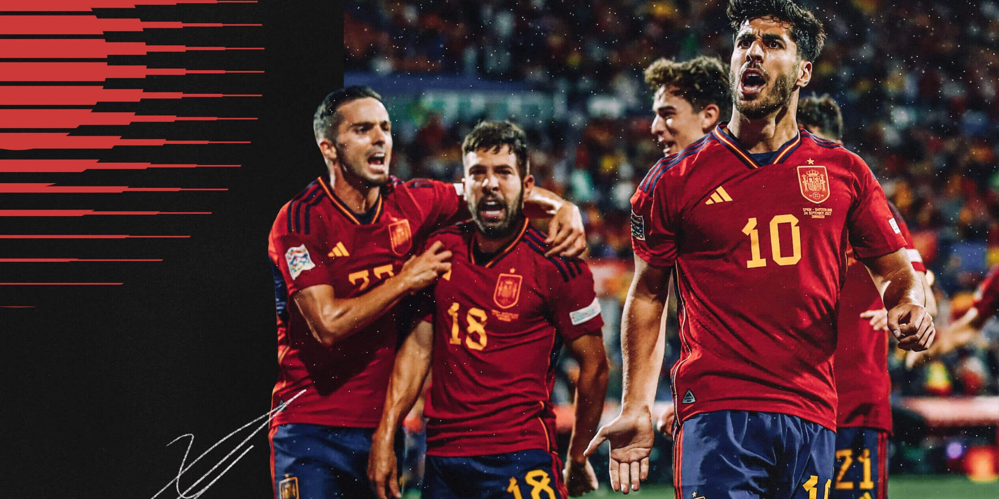

The FIFA World Cup, often simply called the World Cup,
is an international association football
competition between the senior men's national teams of the members of
the Fédération Internationale de Football Association (FIFA), the sport's global governing body.
The tournament has been held every
four years since the inaugural tournament in 1930, with the
exception of 1942 and 1946 due to the Second World War.
The reigning champions are Argentina, who won their third title at the 2022 tournament.
Brazil (5 World Cups)
Brazil have lifted the World Cup a record five times
– 1958, 1962, 1970, 1994 and 2002.
They are also the only team to compete in all 21 editions.
Nicknamed 'La Selecao', Brazil are also the most successful men's team
in the World Cup in terms of matches played (109),
matches won (73) and goals scored (229)
Germany (4 World Cups)
Germany is one of the most successful national
teams in international competitions,
having won four World Cups (1954, 1974, 1990, 2014),
tied with Italy, and only one less than the most successful team,
Brazil. Germany has also won three European Championships (1972, 1980, 1996),
and one Confederations Cup (2017).
Italy (4 World Cups )
Italy is one of the most successful national teams
in the history of the World Cup,
having won four titles (1934, 1938, 1982, 2006)
, just one fewer than Brazil. The team was present in 18
out of the 22 tournaments, reaching six finals,
a third place and a fourth place.

Argentina (3 World Cups)
Argentina is one of the most successful teams in the
tournament's history, having won
three World Cups: in 1978, 1986, and 2022.
Argentina has also been runner up three times:
in 1930, 1990 and 2014. In 18 World Cup tournaments,
Argentina has 47 victories in 88 matches.
France (2 World Cups )
So far, France have won the FIFA World Cup title twice,
in 1998 at home and in 2018 in Russia.
They came close twice having made the finals in the
2006 and 2022 editions but eventually lost to Italy
and Argentina, respectively, in the penalties on both occasions.

Urugauy (2 World Cups)
Has Uruguay ever won a World Cup?
Uruguay has won two World Cups
in 1930 and 1950. In 1954, 1970 and 2010,
The Sky Blue placed fourth overall. In 1966 and 2018,
Uruguay reached the quarterfinals of the event

England (1 World Cup)
England are therefore one of only eight nations to
have won a FIFA World Cup. They have reached the
semi-finals on two other occasions: 1990 and 2018.
England failed to qualify for the finals in 1974, 1978, and 1994.
England also compete in the UEFA European Championship.

Spain (1 World Cup)
In Spain's history in the FIFA World Cup,
the national team has played 67 matches up to
and including the tournament in Qatar in 2022.
From these games, La Furia Roja has won less
than half of those times. The Spanish squad won the FIFA World Cup
once, which was organized in South Africa in 2010